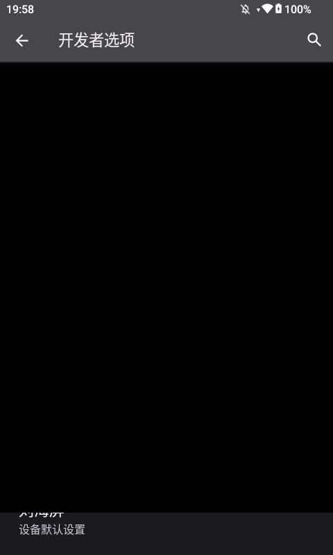
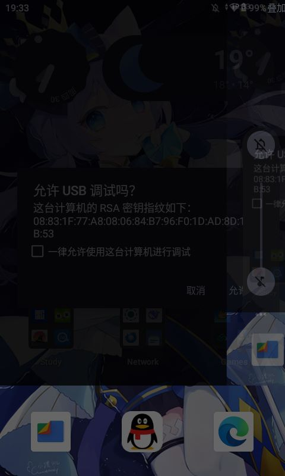
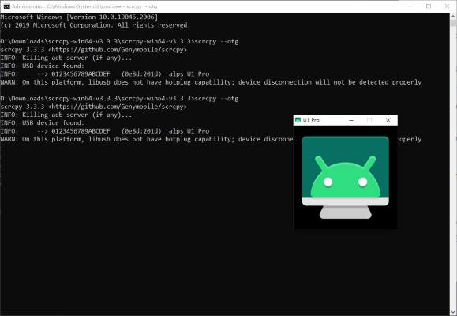

最近在玩安卓开发者模式的时候，看到“绘图”分区内有一个模拟辅助显示设备选项，出于好奇便将其点开了，哪知我点开的是Pandora Boxxx。
由于问题已经解决，我并不在意复现这个问题，并且我在搜索引擎上找了很久都没找到解决方案，最终还是问AI，自己查资料一点一点摸索的，我把这篇文章写出来，希望能节约大家的宝贵时间。
设备情况
设备：杂牌
系统：Android 13 AOSP
物理屏幕分辨率：480*800
保持冷静
现在的问题如图所示，安卓创建了一个半透明遮罩导致我无法操作系统UI（截图出来是个黑块块，低分辨率设备使用4K遮罩，基本上只剩标题栏了）因此不指望能点到关闭按钮。我当时确实很紧张，这是我在学校唯一的娱乐设备，但我相信，我能打开的东西就一定能被我关掉。

尝试强制重启
没用。
进Recovery
由于遮罩已经挡住系统UI（即长按电源键弹出电源选项无法选中关机）我长按电源键10s进行强制关机。
出乎我意料的是，这个主板长按电源键不是关机，而是重启！
在重启的一瞬间，我按下音量键，希望进入Recovery。
然而Android还是启动了，我使用多种办法，甚至一直死死压住音量键试图进入MTK的BROM，然而它都没有被触发，这时，安卓的启动动画是多么令人讨厌啊。
如果你看不懂这一段，可以将其极为粗糙的理解为电脑系统坏了，想进BIOS，开机的时候狂按Del，结果主板没反应。一般人这个时候都急眼了，包括我，但我还是忍住没把这大几百的东西摔掉，而是想办法在安卓系统内就把这个问题解决掉。
进ADB
万幸的是，很久以前我就在这台设备上启用了ADB调试，现在我放假了，正好有电脑。我将设备用数据线连接到电脑上。
C:\Users\Administrator>adb devices
* daemon not running; starting now at tcp:5037
* daemon started successfully
List of devices attached
0123456789ABCDEF unauthorized
这就很操蛋了，显然，ADB已经成功识别到我的设备，但是没有授权。
尝试进行授权

正如图所示，我们看到授权的dialog，问题是触摸已经被屏蔽了，我们该如何允许调试呢？
我尝试使用OTG接鼠标。可当我将设备从USB线上拔下来，那个弹窗居然消失了。
我只有一个Type-C口，手头没有扩展坞，无法同时连接电脑（ADB调试）和鼠标。所以即使OTG鼠标能解决问题，我也没法用。只能指望电脑直接模拟鼠标操作——这让我想到了Scrcpy。
这是一款知名的开源USB屏幕镜像软件，我之前用过好几次，但问题是，在Scrcpy新设备上连接都会令被控设备弹出那个ADB确认授权框，那似乎无解了，我也是第一次抱怨安卓把权限锁的这么死。
难道这个设备只能寄到厂家那里修了吗？我不甘心！
抱着最后一丝希望，我查看了Scrcpy的文档，你猜怎么着——
注意，以OTG 模式运行 scrcpy 不需要 USB 调试。
解决！
后面的事情就不用说了，我立刻在自己电脑上安装Scrcpy，启用OTG模式
scrcpy --otg

诶？我的鼠标怎么没反应？原来我的键鼠操作已经进入安卓设备里了。
但是就算在设备上看到了鼠标指针，那层半透明遮罩还是将鼠标挡在外面，根本无法操作。
让我们再次冷静。鼠标和触摸应该是同一个档次，但键盘的HID就不一定了，而且此时只有这一个dialog，如果它还在焦点上的话，兴许可以空格空格回车回车这样一点一点挪，一点一点操作。
死马暂且当活马医吧。我按下空格，那个CheckBox被勾选上了！
允许！
那一刻，我感觉我已被授予安卓世界中最强大的力量，下一步就是把遮罩干掉。
通过网络搜索，我得知这个半透明遮罩其实是叫overlay_display_devices的东西，我们尝试全局put一下设置项
adb shell settings put global overlay_display_devices null
回车后，显示终于正常了，我松了一口气。看似简单的操作，花了我近半个小时。我疲惫的瘫在椅子上。
总结
诶，我好像是第一次写结构这么完整的文章耶，而且我终于舍得用代码块了。
这其实应该算是一个非常歪门邪道的方法，肯定有更加优雅的解决方案。总之就是开发者选项里的东西不要乱动，我这次遇到的问题还好，如果是赛博灯泡那种（把最小宽度调坏了）wm density应该也能救。